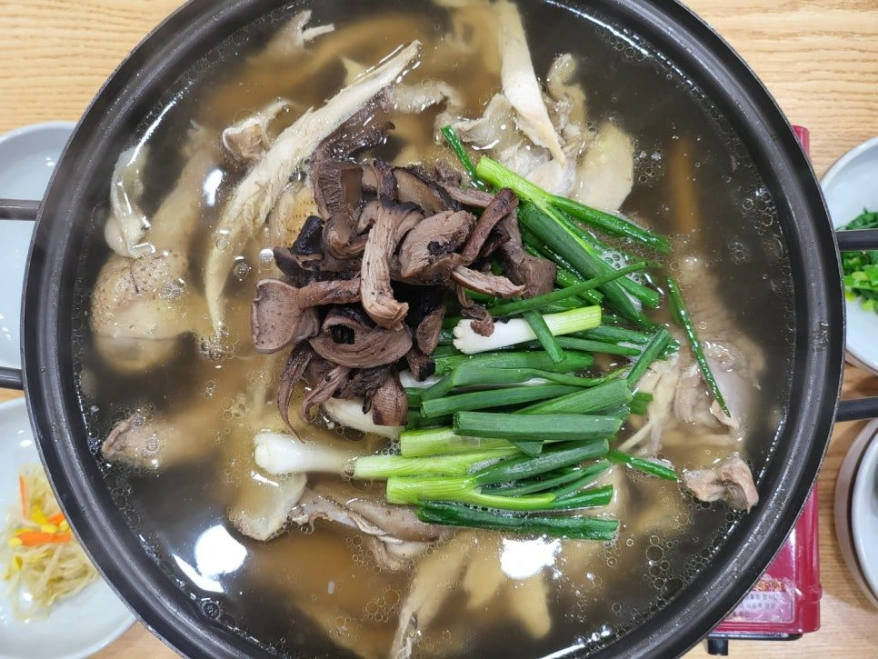
능이백숙
1마리 60,000원
닭 한 마리에 능이버섯을 넣고 푹 끓였습니다.
메기매운탕, 잡고기 어탕국수, 능이백숙.
쌀부터 고춧가루, 배추, 김치까지 국내산으로 차리는 봉화 밥상입니다.
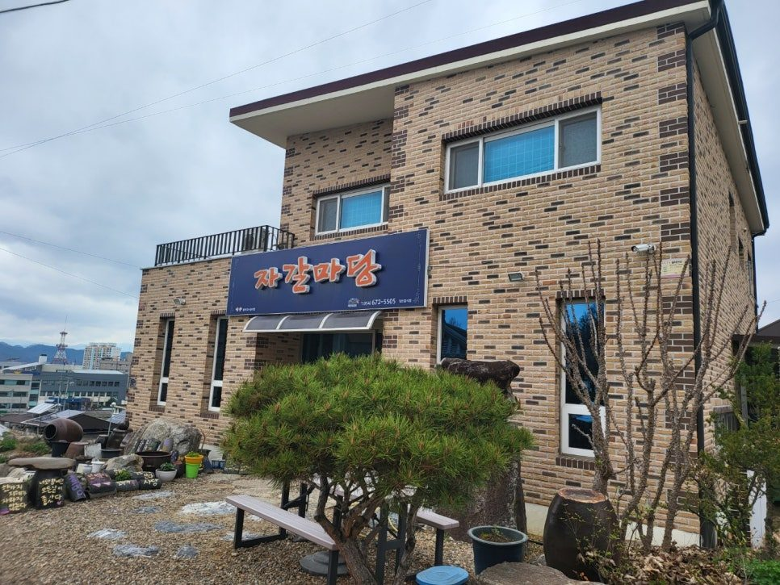

닭 한 마리에 능이버섯을 넣고 푹 끓였습니다.
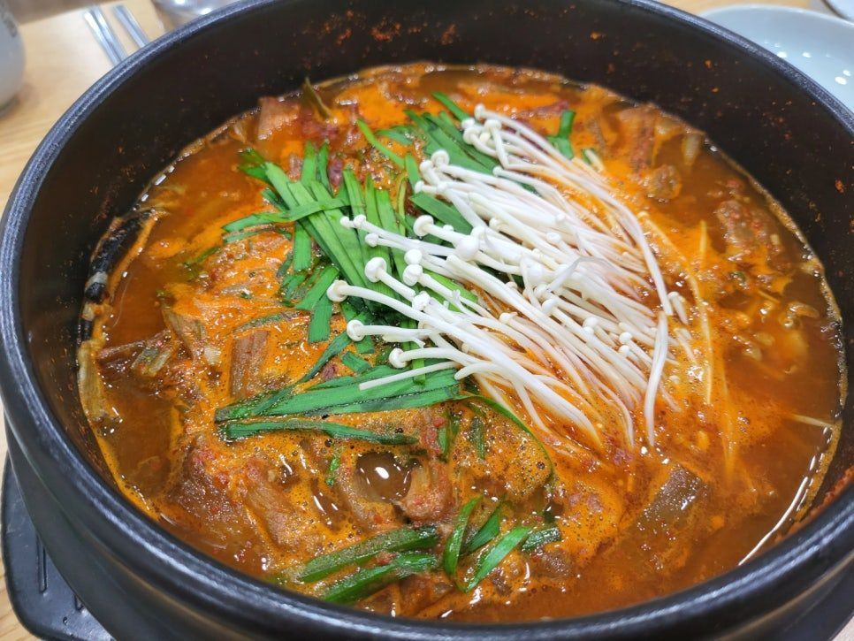
국내산 메기와 민물 잡고기로 얼큰하게 끓여 냅니다.
자갈마당은 모든 식사를 예약으로만 받습니다. 오시기 하루 전까지 전화로 예약해 주시면 오시는 시간에 맞춰 정성껏 준비해 두겠습니다.
054-672-5505매월 마지막 토요일, 영업시간 안
봉화군이 함께하는 할매·할배의 날 행사입니다. 조부모님과 손주가 함께 오시면 됩니다.
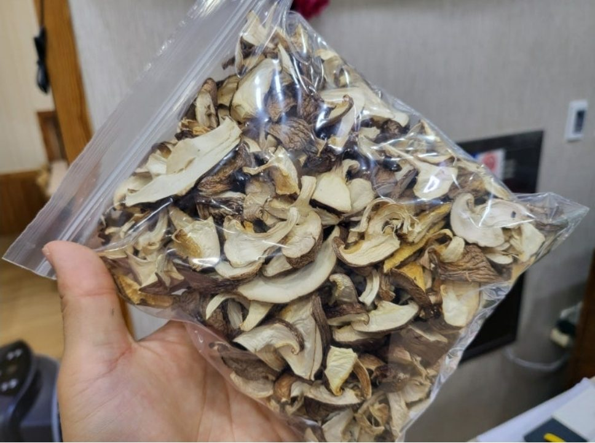
주인이 직접 키워 말린 버섯입니다. 국, 찌개, 볶음에 넣으면 향이 깊어집니다. 식사하고 가시는 길에 계산대에서 찾아 주세요.
맛있게 드시고 건강하세요.
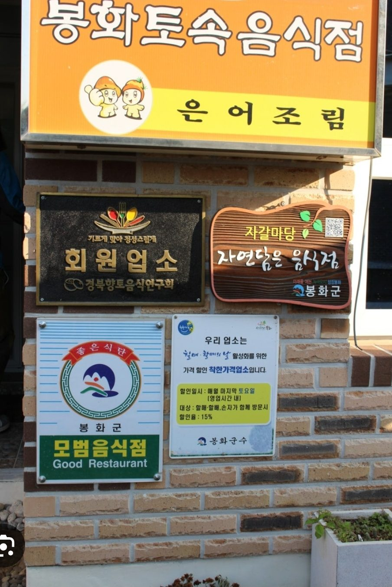
해마다 봉화읍 내성천에서 큰 축제가 열립니다. 자갈마당도 봉화읍 안에 있어 축제장과 가깝습니다. 아래는 2026년 축제 내용입니다. 내년 날짜와 프로그램은 봉화축제관광재단이 발표합니다.
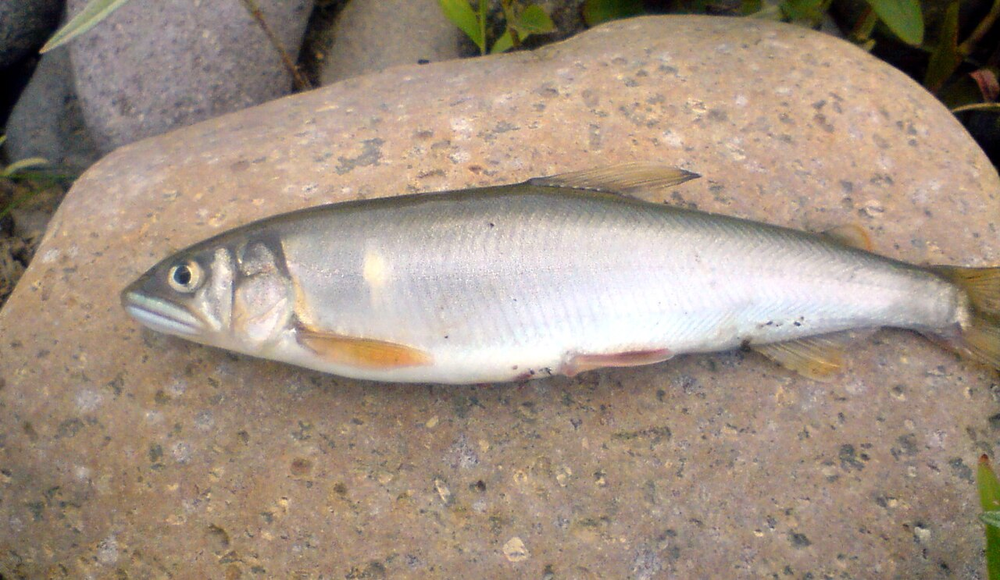
매년 7월 말 ~ 8월 초 · 봉화읍 내성천
맑은 내성천에서 은어를 잡고 물놀이하는 여름 축제입니다. 가족 손님이 특히 많이 찾습니다.
2026년 축제에는 24만 명이 다녀갔습니다.
은어축제 공식 안내 보기 사진 Apple2000 · CC BY 3.0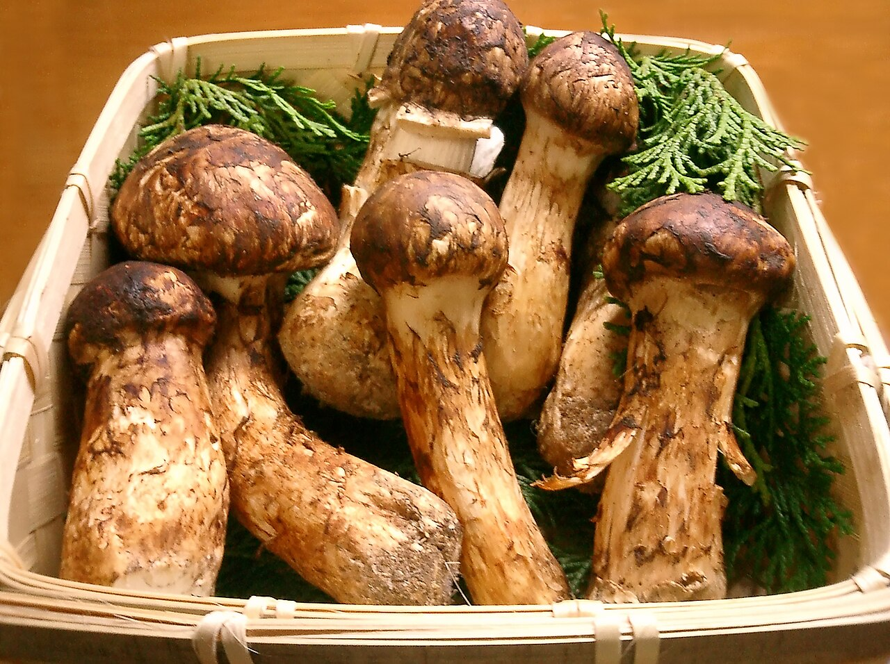
매년 가을 송이철 · 봉화읍 내성천 일원
향 좋은 봉화 송이와 봉화 한약우를 맛보고 사 갈 수 있는 가을 축제입니다.
같은 기간에 청량문화제도 함께 열립니다.
송이축제 공식 안내 보기 사진 Tomomarusan · CC BY 2.5자갈마당이 축제에 나가는 해에는 축제 행사장으로 오셔서 드시면 됩니다.
축제에 나가지 않는 해에는 식당에서 그대로 손님을 맞습니다.
자갈마당은 100% 예약제로, 하루 전까지 예약을 받습니다. 축제 기간에는 손님이 많으니 더 일찍 전화로 예약해 주세요. 올해는 어디서 드실 수 있는지도 전화로 알려 드립니다.
축제 날짜와 프로그램은 해마다 조금씩 달라집니다. 최신 소식은 봉화축제관광재단(054-674-3053)에서 확인하세요.
산 좋고 물 맑은 봉화에는 오를 산도, 걸을 숲도, 맛볼 것도 많습니다.
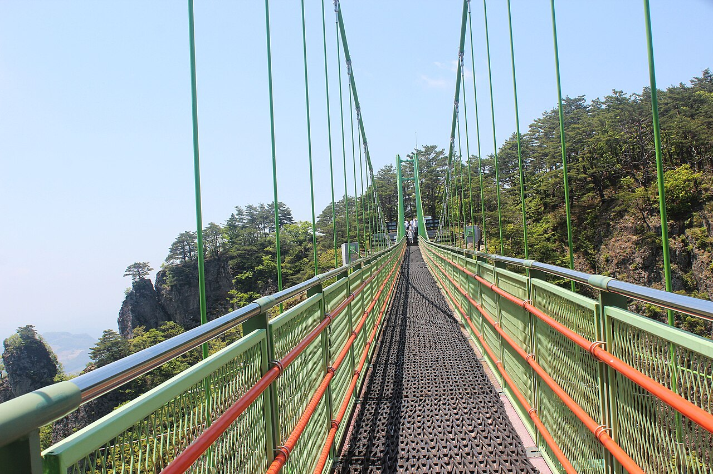
기암절벽 봉우리가 이어진 봉화 대표 산입니다. 봉우리 사이를 잇는 하늘다리에 서면 발아래로 골짜기가 펼쳐집니다.
사진 최옥석 · CC BY-SA 4.0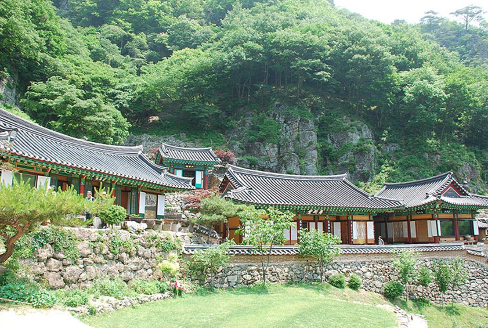
청량산 절벽 아래 자리한 절입니다. 봉화를 찾는 여행객이 가장 많이 들르는 곳입니다.
사진 한국관광공사 · 촬영 김혜경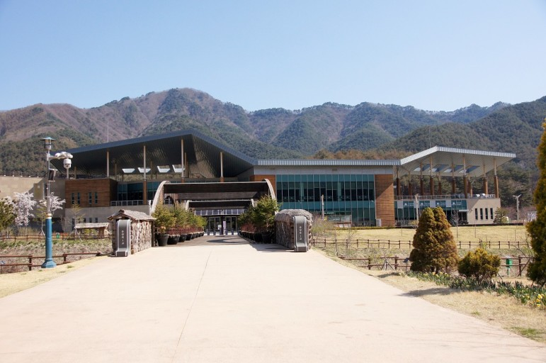
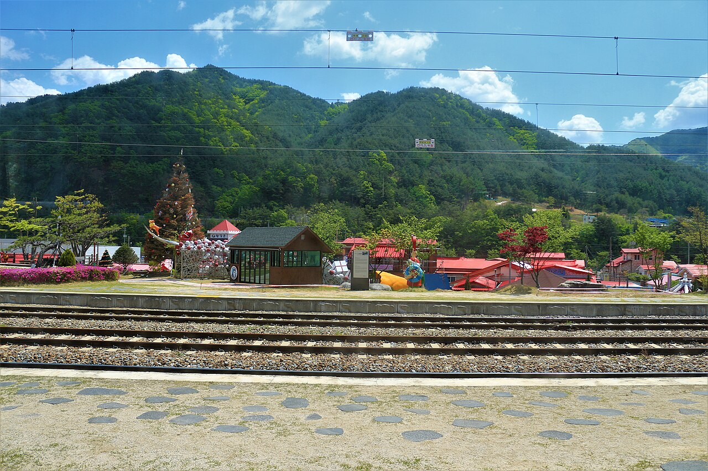
일 년 내내 크리스마스 분위기가 나는 간이역 마을입니다. 협곡 사이를 달리는 백두대간 협곡열차가 여기서 출발합니다.
사진 Rsa · CC BY-SA 3.0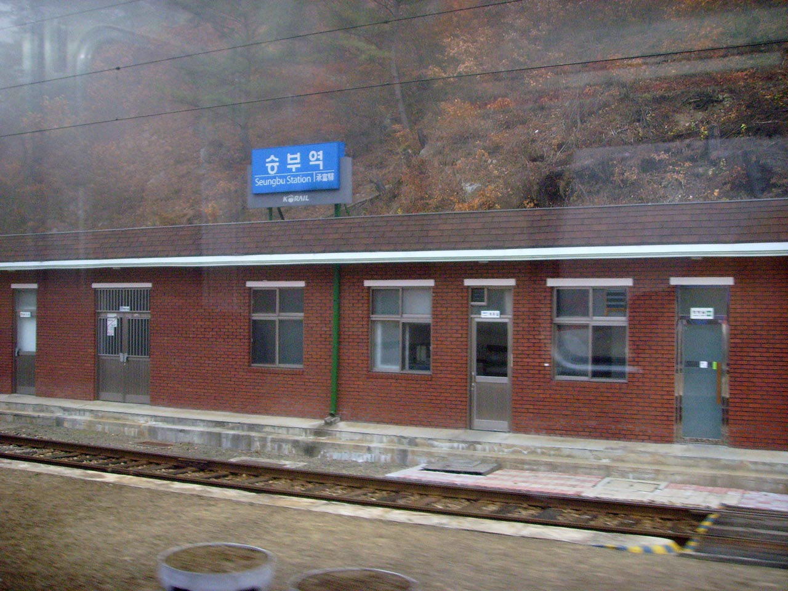
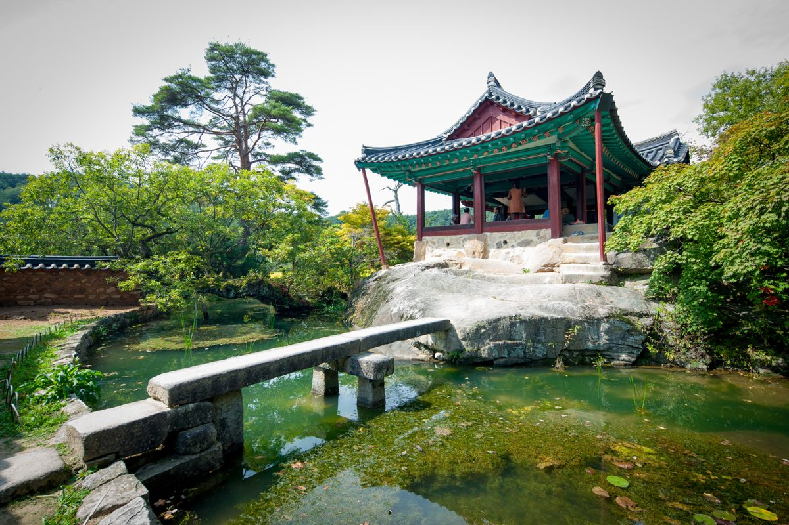
충재 권벌이 지은 정자가 있는 안동 권씨 집성촌입니다. 연못 위 바위에 올린 청암정이 아름답습니다. 봉화읍에서 가깝습니다.
사진 한국관광공사 · 촬영 김지호문수산 중턱의 오래된 절입니다. 절 마당에서 내려다보는 산 능선이 좋습니다.
사진 한국관광공사 · 촬영 김승진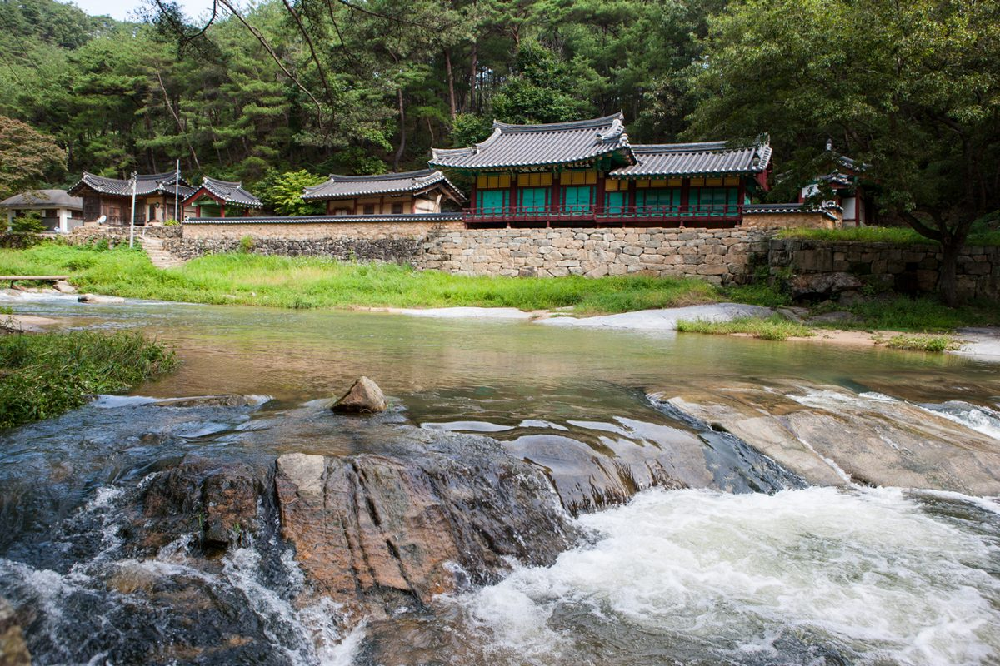
닭실마을 옆 맑은 계곡과 그 위의 오래된 정자입니다. 가볍게 걷기 좋습니다.
사진 한국관광공사 · 촬영 김지호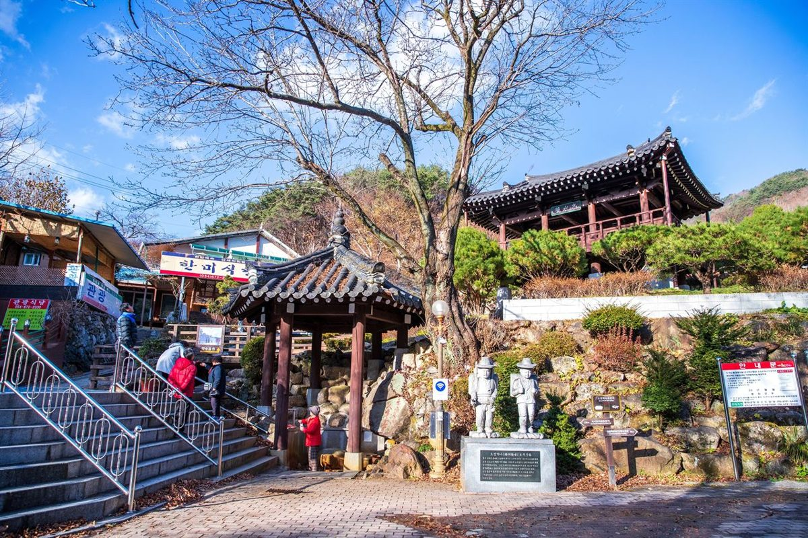
톡 쏘는 탄산 약수터입니다. 근처 산길을 걷고 약수 한 모금 하기 좋습니다.
사진 한국관광공사 · 촬영 김지호군민회관 옆 언덕, 봉화읍내가 내려다보이는 자리에 있습니다.